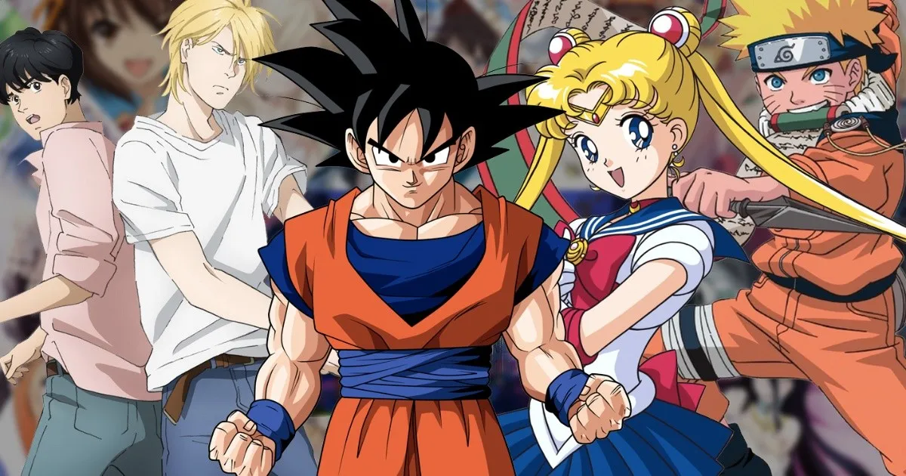

Anime.
El anime (en japonés アニメ) es la palabra con la que hablamos de la animación que se hace en Japón.
Es un fenómeno cultural muy extendido por todo el mundo, que cuenta con millones de seguidores y ha permitido el nacimiento de una cultura otaku formada por todo tipo de productos y adaptaciones transmedia a otros formatos como los videojuegos o las novelas ligeras.
Existen muchos géneros diferentes en el anime, como la ciencia ficción o la fantasía, pero si por algo destaca frente a otros tipos de cultura es por sus personajes.
Las tramas están basadas en las emociones que expresan delante de la pantalla, desde la tristeza más grande de Violet Evergarden hasta la aventura más emocionante con Fullmetal Alchemist: Brotherhood. Las series o películas de animación japonesa son pura poesía en movimiento.
Document

Document